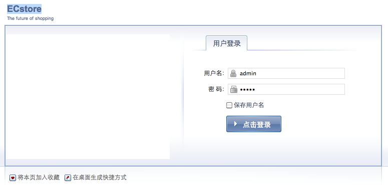
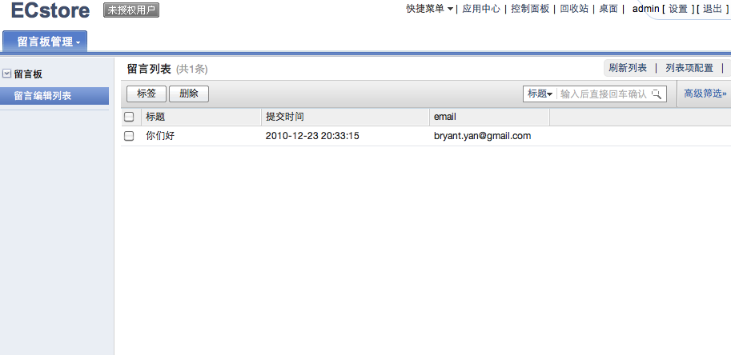
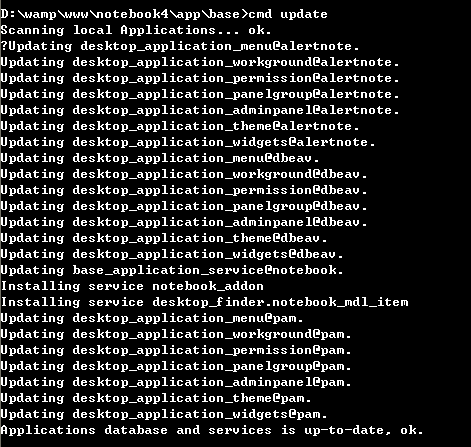
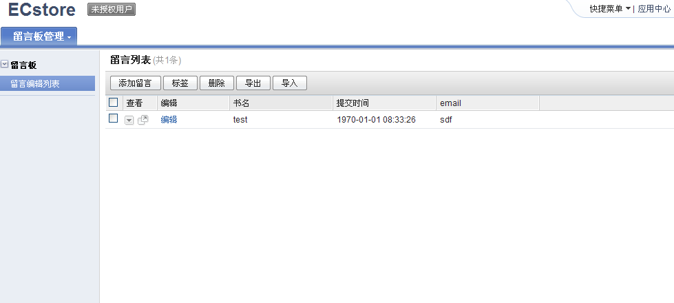

dbeav http://svn.app.shopex.cn/dbeav desktop http://svn.app.shopex.cn/desktop
<depends>
<app>base</app>
<app>desktop</app>
</depends>
e:\webpub\ecos>core\cmd install -r notebook Installing... dbeav Creating table sdb_dbeav_meta_value_denum Creating table sdb_dbeav_meta_value_int Creating table sdb_dbeav_meta_value_datetime Creating table sdb_dbeav_meta_value_decimal Creating table sdb_dbeav_meta_refs Creating table sdb_dbeav_meta_value_text Creating table sdb_dbeav_recycle Creating table sdb_dbeav_meta_value_varchar Application dbeav installed... ok. Installing... desktop Creating table sdb_desktop_tag Creating table sdb_desktop_hasrole Creating table sdb_desktop_tag_rel Creating table sdb_desktop_users Creating table sdb_desktop_roles Creating table sdb_desktop_user_flow Creating table sdb_desktop_flow Creating table sdb_desktop_role_flow Installing service desktop_sidepanel_desktop_dashboard Installing service desktop_finder_base_mdl_apps Installing service app_content_detector Installing panelgroup performance Installing panelgroup setting Installing panelgroup user Installing panelgroup network Installing panelgroup other Installing adminpanel queue:index Installing adminpanel system:basic Installing adminpanel adminpanel:licence Installing adminpanel region:index Installing adminpanel users:index Installing adminpanel roles:index Installing adminpanel network:index Application desktop installed... ok. Creating table sdb_notebook_item Installing service notebook_addon Installing service desktop_finder.notebook_mdl_item Installing Cache_Expires DB:NOTEBOOK_ITEM UPDATE CACHE EXPIRES KV DATA Installing menu notebook_ctl_admin_notebook Installing workground notebook_admin_notebook Installing permission notebook_manage Application notebook installed... ok.
<?php
return array(
...
'/admin'=> array('app'=>'desktop'),
...
);

<desktop>
<workground name="留言板管理" id="notebook_admin_notebook" controller="admin_notebook" action="index" order="10">
<menugroup name="留言板">
<menu controller="admin_notebook" action="index" permission="notebook_manage" display="true" order="1010">留言编辑列表</menu>
</menugroup>
</workground>
<permissions>
<permission id="notebook_manage" display='true'>notebook操作</permission>
</permissions>
</desktop>
<?php
class notebook_ctl_admin_notebook extends desktop_controller{
function index(){
$this->finder('notebook_mdl_item',array('title'=>'留言列表','use_buildin_set_tag'=>true,'use_buildin_filter'=>true,'use_buildin_tagedit'=>true));
}
}
<?php
$db['item']=
array (
'columns' =>
array (
'item_id' =>
array (
'type' => 'number',
'required' => true,
'extra' => 'auto_increment',
'pkey' => true,
),
'item_subject' =>
array (
'type' => 'varchar(100)',
'in_list'=>true,
'is_title'=>true,
'default_in_list'=>true,
'label'=>'书名',
'filtertype'=>true,
'searchtype'=>true,
'searchtype' => 'has',
),
'item_content' =>
array (
'lable' => '内容',
'type' => 'text',
),
'item_posttime' =>
array (
'in_list'=>true,
'default_in_list' => true,
'label' => '提交时间',
'type' => 'time',
),
'item_email' =>
array (
'in_list'=>true,
'default_in_list' => true,
'label' => 'email',
'type' => 'email',
),
),
);
我们对dbschmea 进行了重新定义, 而系统会通过dbschema的定义文件对系统进行一列的处理, 包括对数据库表的重新生成, 因此需要重新装一下, 当然也很简单
bryant@forsky /Users/bryant/codes/notebook/app/notebook %> sudo ~/codes/notebook/app/base/cmd install -r notebook Creating table sdb_notebook_item Installing service notebook_addon Installing service desktop_finder.notebook_mdl_item Installing Cache_Expires DB:NOTEBOOK_ITEM UPDATE CACHE EXPIRES KV DATA Installing menu notebook_ctl_admin_notebook Installing workground notebook_admin_notebook Installing permission notebook_manage Application notebook installed... ok.

desktop 提供了一个后端的管理体系, 其中最为强大的是他所带的finder。它通过扩展dbschmema所定义的数据库描述文件, 基于数据库表, 提供包含数据展示 删除 过滤 搜索 tag 回收站等管理机制,它的扩展主要依赖于service的注册。我们下边会进一步进行扩展。
<services>
...
<service id="desktop_finder.notebook_mdl_item">
<class>notebook_finder_item</class>
</service>
...
</services>
<?php
class notebook_finder_item{
var $column_edit = '编辑';
function column_edit($row){
return '<a href="index.php?app=notebook&ctl=admin_notebook&act=edit&id='.$row['item_id'].'">编辑</a>';
}
var $detail_edit = '详细列表';
function detail_edit($id){
$render = app::get('notebook')->render();
$oItem = kernel::single("notebook_mdl_item");
$items = $oItem->getList('item_subject, item_posttime, item_email',
array('item_id' => $id), 0, 1);
$render->pagedata['item'] = $items[0];
$render->display('admin/itemdetail.html');
//return 'detail';
}
}
function edit(){
header("cache-control:no-store,no-cache,must-revalidate");
$id = $_GET["id"];
$oItem = kernel::single('notebook_mdl_item');
$row = $oItem->getList('*',array('item_id'=>$id),0,1);
$this->pagedata['item'] = $row[0];
$this->page('admin/edit.html');
}
function toEdit(){
$oItem = kernel::single("notebook_mdl_item");
$arr = $_POST['item'];
$this->begin('index.php?app=notebook&ctl=admin_notebook&act=index');
$oItem->save($arr);
$this->end(true, "留言添加成功！");
}
<form action="index.php?app=notebook&ctl=admin_notebook&act=toEdit" method="post">
<input type="hidden" name="item[item_id]" value="<{$item.item_id}>" id="gEditor-GId-input"/>
<table width="100%" border="0" cellpadding="0" cellspacing="0" class="gridlist">
<tbody>
<tr>
<td>主题</td>
<td><{input type="text" name="item[item_subject]" value=$item.item_subject}></td>
</tr>
<tr>
<td>时间</td>
<td><{input type="time" name="item[item_posttime]" value=$item.item_posttime}></td>
</tr>
<tr>
<td>email</td>
<td><{input type="text" name="item[item_email]" value=$item.item_email}></td>
</tr>
<tr>
<td>内容</td>
<td><{input type="textarea" name="item[item_content]" value=$item.item_content}></td>
</tr>
<tr>
<td align="center" colspan="2"><{button class="btn-primary" type="submit" label="编辑"}></td>
</tr>
</tbody>
<table>
</form>
<meta http-equiv="Content-Type" content="text/html; charset=utf-8" />
<div class="tableform">
<table width="100%" border="0" cellpadding="0" cellspacing="0" class="gridlist">
<thead>
<tr>
<th>留言标题</th>
<th>提交时间</th>
<th>email</th>
</tr></thead><tbody>
<tr>
<td><{$item.item_subject}></td>
<td><{$item.item_posttime|cdate}></td>
<td><{$item.item_email}></td>
</tr>
</tbody>
</table>
</div>
</div>

替换
function index(){
...
}
为 function index(){
$this->finder('notebook_mdl_item',
array('title'=>'留言列表',
'actions' =>
array(
array(
'label' => app::get('notebook')->_('添加留言'),
'icon' => 'add.gif',
'href' => 'index.php?app=notebook&ctl=admin_notebook&act=add',
// 'target' => '_blank'
),
),
'use_buildin_set_tag'=>true,
'use_buildin_filter'=>true,
'use_buildin_tagedit'=>true,
'use_buildin_set_tag'=>true,
'use_buildin_export'=>true,
'use_buildin_import'=>true,
'allow_detail_popup'=>true,
//'use_view_tab'=>true,
));
}
function add(){
$this->page('admin/edit.html');
}

desktop_controller:finder($model_object_name, $params) -> void
类型:
$model_object_name = string()
$params = array(
'title' => string(),
'actions' => $actions,
'use_buidinin_set_tag' => bool(), //default: false
'use_buildin_filter' => bool(), //default: false
'use_buildin_tagedit' => bool(), //default: true
'use_buildin_set_tag' => bool(), //default: false
'use_buildin_export' => bool(), //default: false
'use_buildin_import' => bool(), //default: false
'allow_detail_popup'=> bool(), //default: false
'use_view_tab' => bool(), //default: false
'max_actions' => int(), //defaut: 7
'delete_confirm_tip' => string(), //default: ''
'filter' => array())
$actions = array(
array(
'label' => string(),
'icon' => string(),
'href' => string))
参数描述:
$params: 参数
* title, finder列表名称
* actions, 操作面板上的动作
* use_buildin_set_tag, 是否可以设置tag
* use_buildin_tagedit, 是否可以tag编辑
* use_buildin_export, 是否支持导出.
* use_buildin_import, 是否支持导入
* use_buildin_filter, 是否支持过滤器
* allow_detail_popup, 是否支持行数据详细页面弹出
* use_view_tab, 是否使用finder显示标签
如果选择开启finder显示标签, 继承desktop_controller的类需要重载 _views 函数
* max_actions, finder面板支持最大的action数量
$actions: 操作面板上的动作
* label 列名称
* icon 图标
* href 链接地址
函数描述:
输出finder列表
desktop_controller:_views() -> $show_menus
类型:
$show_menus = array(
array(
'filter' => string(),
'addon' => int(),
'href' => string())
参数描述:
$show_menus
* filter 标签过滤器
* addon 过滤出的数量
* href 连接地址, 链接地址需要加入 view参数, view参数为, 本标签在
$show_menus数组里的 key 值,例如:
index.php?app=notebook&ctl=admin_notebook&act=index&view=1
函数描述:
如果在用户控制里调用 finder 函数,use_view_tab设置为true时, finder输出时会
调用_views()以显示 finder的标签.